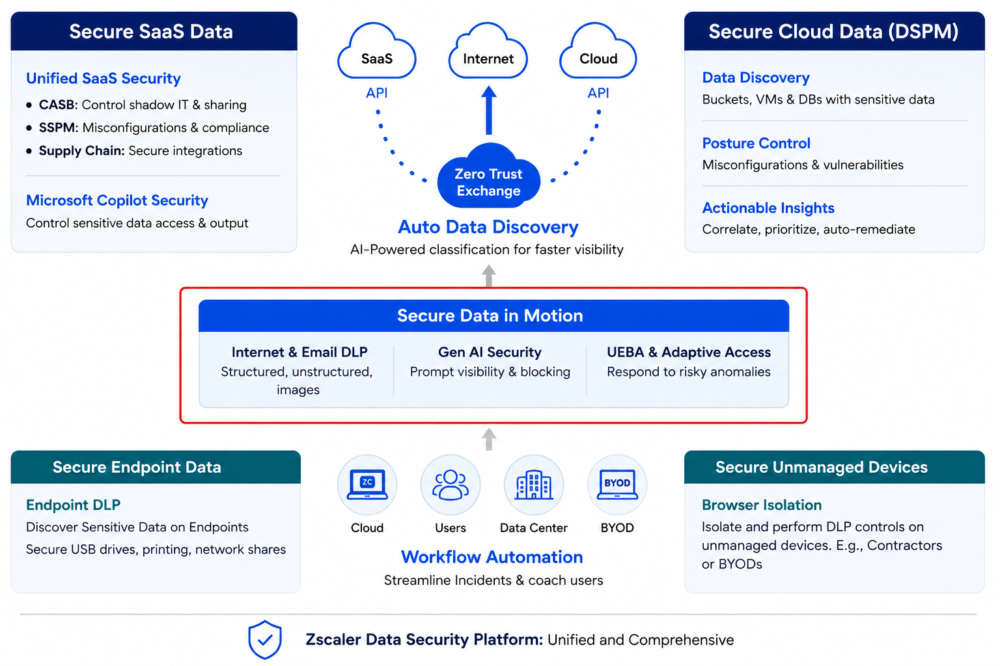
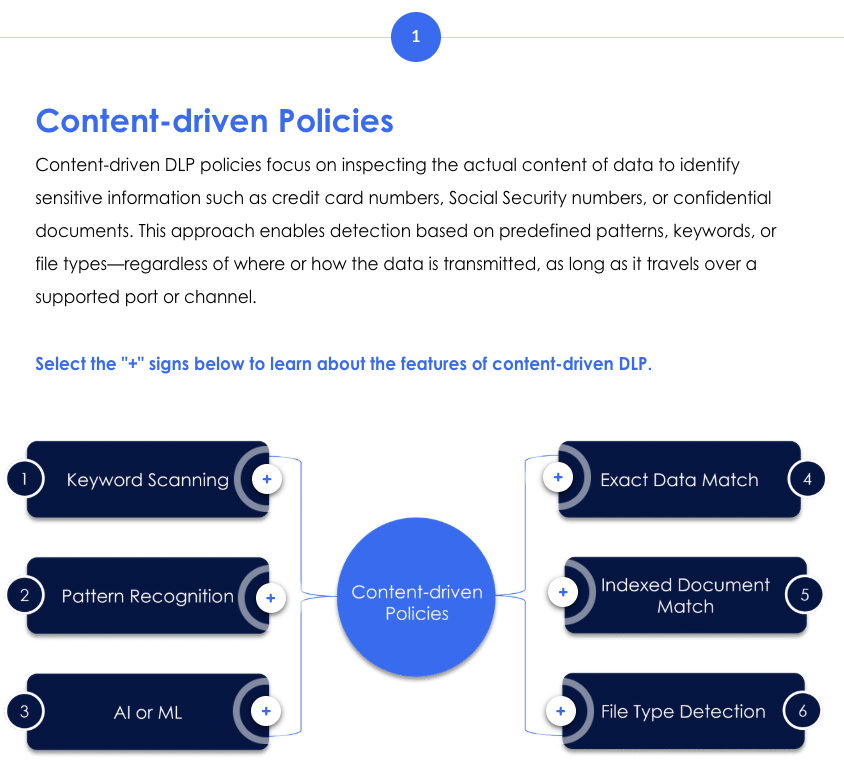
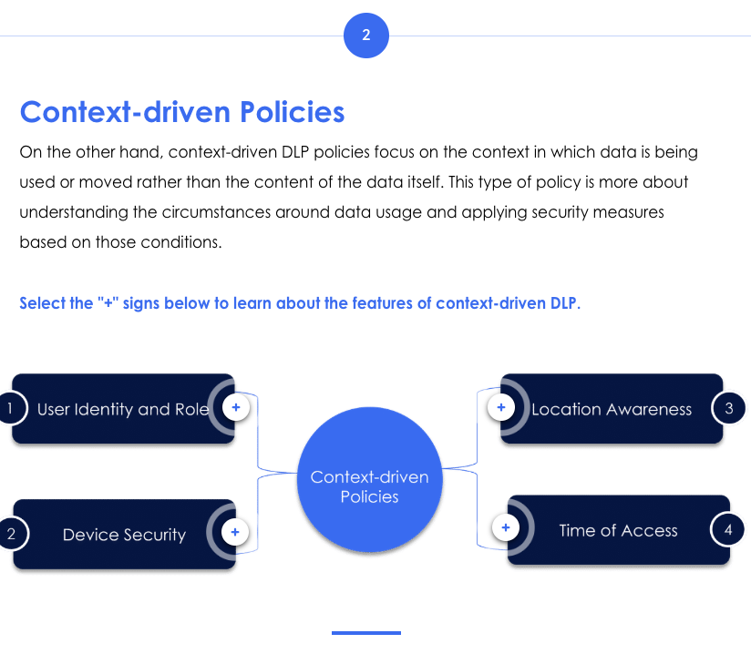
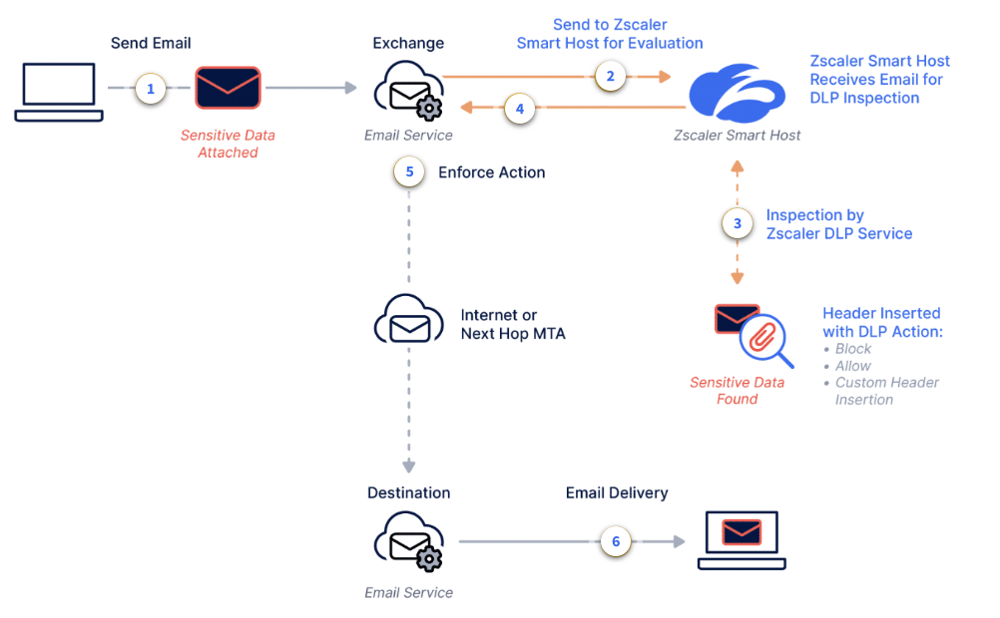

DLP policies, content vs context inspection, UEBA, Gen AI security, parallel processing, and outbound email DLP.
Secure data in motion with encryption and a DLP engine to prevent data leaks.
Zscaler's advanced security solutions ensure data being transmitted across networks remains protected from encryption and tampering — inspecting every byte before it leaves your organisation.
💭THINK FIRST · DATA IN MOTION
Data at rest sits in a vault; data in motion is a parade marching past you. The only chance you get to stop a leak is during the brief window when bytes flow through an inspection point — miss it, and the data is already on someone else's server.
If a file is encrypted in transit, how can the DLP engine see what's inside?
What three vectors does "Secure Data in Motion" cover at Zscaler?
Why is inline inspection more powerful than scanning data after it has landed?
Q1 — MODEL ANSWER
Zscaler terminates the TLS session at the proxy and inspects the cleartext payload before re-encrypting it on its way out. Without this SSL decryption, encrypted traffic is opaque and DLP rules cannot evaluate the content. This is why decryption policy and certificate trust are foundational — every inline data security capability that operates above the transport layer depends on it.
Q2 — MODEL ANSWER
Web (internet and SaaS via the secure web gateway), Email (outbound mail flow via journaling), and Endpoint (the file-system and clipboard activity captured by the Client Connector). Together they cover the channels users actually move data through every day — browser uploads, email sends, and local copy/paste or file transfer to removable media.
Q3 — MODEL ANSWER
Inline inspection prevents the leak before the data leaves; post-event scanning only tells you the leak already happened. Once data lands on a third-party service, you cannot recall it — you can only request deletion and hope. Inline also lets you respond contextually (block, allow with warning, encrypt, isolate) at the exact moment of action, which makes user education and enforcement happen in the same gesture.
OVERVIEW
Securing data as it moves
At Zscaler, securing data in motion is a critical focus. By leveraging encryption, real-time threat detection, and the Zero Trust Exchange framework, Zscaler provides comprehensive security measures while protecting sensitive information as it travels across networks, SaaS apps, cloud environments, and endpoints.
Core focus: The DLP engine plays a pivotal role in identifying and preventing unauthorised data transfers. It continuously monitors and inspects data in motion to detect and block sensitive information from being sent to unauthorised destinations — regardless of how the transfer occurs.

Zscaler Data Security Platform — unified and comprehensive. Secure Data in Motion (highlighted) sits at the centre, covering Internet & Email DLP, Gen AI Security, and UEBA & Adaptive Access.
Where "Data in Motion" fits
Within the Zscaler platform, Secure Data in Motion covers three key capabilities:
Internet & Email DLP — structured, unstructured, and image data inspected as it moves
Gen AI Security — prompt visibility and blocking for generative AI platforms
UEBA & Adaptive Access — responds to risky anomalies detected in user behaviour
📷 1.png will appear here once you add it to this folder
Generate: flat green minimalist illustration of a flowing river of data packets passing through a translucent inspection gateway in the centre, with three branching channels labelled by icons only (web cloud, AI spark, envelope) — no text labels.
Analogy
Think of Secure Data in Motion as airport security. Bags at home (data at rest) are nobody's concern, but the moment a passenger walks toward the gate, every bag passes through the same X-ray belt — regardless of whether it's headed to a domestic SaaS terminal, an international cloud, or a Gen AI departure lounge.
📷 A1.png — add this image to the folder
Flat minimalist cartoon illustration of an airport security checkpoint as an analogy for data in motion. Wide composition. Left side (Data at Rest): a cosy living room where a suitcase sits unmonitored on a sofa next to a houseplant — no one cares about it. Centre (The Gate): a busy airport terminal where the same suitcase, now carried by a relaxed traveller, passes through a single shared X-ray conveyor belt under the alert eye of a friendly TSA-style agent. Multiple traveller-figures form a queue, each suitcase glowing different colours depending on what's inside (sensitive icons visible through the X-ray). Right side (Three Destinations): three brightly-coloured departure-lounge signs branching off after the checkpoint — Domestic SaaS gate labelled with a friendly app-window icon, an International Cloud gate with a stylised globe and cloud, and a Gen AI Departure Lounge with a futuristic robot greeter at the door. All three are downstream of the same single X-ray belt, emphasising that every destination shares the same inspection point. Polished modern terminal, soft fluorescent light, neat queueing barriers. Clean geometric shapes, flat illustration style, bold outlines, simple cartoon characters, no text labels, no UI elements, educational infographic feel, modern tech-analogy aesthetic.
🧠
MENTAL NOTE
Secure Data in Motion = Internet/Email DLP + Gen AI Security + UEBA/Adaptive Access — all unified through the Zero Trust Exchange.
ASK A QUESTION
MY NOTES
💭THINK FIRST · INLINE USE CASES
Real protection is rarely a single blanket "block" button — it's a stack of overlapping controls that each catch a different escape route. The same employee can leak data through a shadow app, the wrong tenant of a sanctioned app, or by simply opening a webmail tab on a personal laptop.
If you allow Google Drive corporate-wide, what's stopping uploads to a personal Drive on the same domain?
How can you permit an app's "general" activity but block its file uploads — without two separate proxies?
Why does shadow IT discovery have to come before enforcement?
Q1 — MODEL ANSWER
Tenant Restrictions. The corporate Google Drive and a personal Drive both live on drive.google.com — domain-level allow/block cannot tell them apart. Tenant Restrictions tells the proxy "permit this domain only for these tenant identifiers" so logins to a personal tenant from the corporate network are blocked while the corporate tenant continues to work. Without it, allowing the platform allows every tenant on it.
Q2 — MODEL ANSWER
Cloud App Control breaks an application's behaviour into granular actions — view, share, upload, download, edit — and applies policy per action. So you can allow Box "view and edit" while denying "upload" or "share externally." This is what makes a single inline platform replace a stack of app-specific gateways: one engine recognises the action, one policy decides.
Q3 — MODEL ANSWER
Because you cannot write meaningful enforcement against an app you do not know exists. Shadow IT discovery surfaces the unsanctioned tools in use, lets you classify them by risk, and only then can you decide which to block, sanction, or limit. Enforcement without discovery is enforcement against a guess — and the apps you do not know about are exactly the ones leaking the most.
COMMON USE CASES
Six practical use cases for inline data protection
Now that you have a basic understanding of securing data in motion, let's explore how these concepts apply to practical scenarios. When considering inline data protection, all six use cases below must be addressed to safeguard data in real time.
USE CASE 1
Shadow IT Discovery
Automatically surfaces unsanctioned applications employees are using — providing visibility before enforcement can begin.
USE CASE 2
Cloud App Control
Enables granular policy enforcement per app category. Instead of blanket blocks, you can allow an app but restrict specific actions — e.g., allow Google Drive but block file uploads. Each app category has a risk score (0–100).
USE CASE 3
Tenancy Restrictions
Differentiates between instances of the same tenant. For example: allow uploads to corporate OneDrive but block uploads to personal OneDrive — even within the same application.
USE CASE 4
Inline DLP for Web and SaaS
Inspects all traffic in real time using the unified DLP policy engine — detecting sensitive content in web uploads, SaaS file transfers, email, and cloud storage from a single policy point.
USE CASE 5
UEBA & Adaptive Access
Monitors user and entity behaviour for anomalies. When suspicious behaviour is detected (e.g., bulk downloads), adaptive access can automatically require MFA, restrict access, or force reauthentication.
USE CASE 6
Data Security on BYOD
Browser Isolation prevents data from landing on unmanaged or personal devices — protecting sensitive data without requiring VDI or MDM deployment.
★
CLOUD APP CONTROL EXAMPLE
With Cloud App Control, you don't need to block an entire platform. Instead, you can permit General activities for social media but block file attachment sending. Or allow corporate OneDrive access while blocking uploads to personal OneDrive via tenancy restrictions — all with OCR-powered content inspection.
Analogy
Inline data protection is like a building with six different doormen — one checks IDs, one inspects packages, one verifies you're entering the right wing, one watches for suspicious behaviour, one handles guests on personal devices, and one keeps a log of every door used. Skip any one and a determined visitor still slips through.
📷 A2.png — add this image to the folder
Flat minimalist cartoon illustration of a grand corporate lobby as an analogy for six inline data-protection layers. Wide composition with six distinctly uniformed doormen arranged in a single processional row from the front door inward, each guarding a sub-checkpoint. Doorman 1: checking a guest's photo ID against a clipboard. Doorman 2: opening and inspecting a wrapped parcel with a magnifying glass. Doorman 3: pointing to a wall map showing East wing vs West wing and verifying the guest is going to the correct wing. Doorman 4: in plainclothes watching guest behaviour with a discreet headset, eyes narrowed at one fidgety visitor. Doorman 5: at a desk handling visitors who are carrying personal phones/laptops, attaching a "BYOD" lanyard. Doorman 6: at the final desk writing every entry into a fat leather logbook of every door used. The lobby is marble-floored with brass fittings, potted ferns and chandeliers. A determined-looking visitor in dark glasses tries to dodge around one of them but cannot bypass the chain. Mood of layered, polite, exhaustive scrutiny. Clean geometric shapes, flat illustration style, bold outlines, simple cartoon characters, no text labels, no UI elements, educational infographic feel, modern tech-analogy aesthetic.
🧠
MENTAL NOTE
Six use cases: Shadow IT Discovery, Cloud App Control, Tenancy Restrictions, Inline DLP, UEBA/Adaptive Access, BYOD via Browser Isolation. Tenancy restrictions = corporate vs personal instance of the SAME app.
ASK A QUESTION
MY NOTES
💭THINK FIRST · CONTENT VS CONTEXT
Two questions every DLP engine must answer about a flowing transaction: what is this data? and who is moving it, from where, on what device, at what time? Each question alone leaks; combined, they form a verdict.
If a credit card number is in a JPG screenshot, can keyword scanning catch it? What about OCR?
Why might the same file be allowed for a senior researcher but blocked for an intern?
What does it mean that Zscaler uses "one engine, one policy" across web, SaaS, and endpoint?
Q1 — MODEL ANSWER
Plain keyword scanning cannot — the JPG is a pixel grid, not text. OCR (Optical Character Recognition) extracts the digits from the image so the DLP engine can apply pattern detection (Luhn check, card number regex) and EDM/IDM matching against known card data. Screenshots are a classic exfiltration channel precisely because un-OCRed DLP misses them; turning OCR on closes that gap.
Q2 — MODEL ANSWER
Because policy is contextual, not just content-driven. The same document carries different risk depending on the actor's role, device posture, location, and the destination. A senior researcher uploading a draft to their authorised analytics workspace is normal; an intern uploading the same file to a personal cloud account is exfiltration. Contextual rules — role + device + destination + content — produce a verdict no content-only engine can reach.
Q3 — MODEL ANSWER
It means classifications, EDM/IDM templates, and policies are defined once and enforced uniformly wherever data moves — web upload, SaaS API, endpoint clipboard, email send. There is one definition of "sensitive," one place to update it, and one audit trail. The opposite — a different DLP per channel — is what creates the policy-drift and coverage gaps the unified platform exists to eliminate.
DLP POLICIES
Zscaler Data Loss Prevention Policies
Zscaler DLP policies are designed to protect sensitive data across networks and applications. They monitor data movement and enforce rules to prevent unauthorised sharing, access, or loss — based on both user activities and application behaviour.
CONTENT-DRIVEN
What the data IS
Inspects the actual content of data to identify sensitive information (credit card numbers, SSNs, confidential documents). Detection based on predefined patterns, keywords, or file types — regardless of where or how it's transmitted.
CONTEXT-DRIVEN
Where & how it's used
Focuses on the context in which data is being used or moved — user identity, device security level, location, and time of access — rather than the content of the data itself.

Content-driven DLP — 6 detection methods radiating from the central DLP engine
Content-driven Features
1. Keyword Scanning
Scans for sensitive or confidential words/phrases — credit card numbers, SSNs, specific business-related technical terms.
2. Pattern Recognition
Identifies specific data formats by detecting predefined sequences and structures (e.g., credit card or SSN patterns).
3. AI or ML
Advanced algorithms identify complex information types — medical records, financial data — that may not follow simple patterns but require contextual understanding.
4. Exact Data Match (EDM)
Uses a defined EDM template to accurately match data against records from structured sources (database exports), enabling precise detection of customer or employee records.
5. Indexed Document Match (IDM)
Fingerprints and indexes critical documents with sensitive data, creating a repository the Zscaler service uses to identify matches in outbound traffic. Supports confidence thresholds (e.g., 75% match).
6. File Type Detection
Identifies sensitive information based on file type — PDFs, Word documents, Excel spreadsheets — regardless of file extension or encoding.

Context-driven DLP — 4 contextual factors that determine whether data access is permitted
Context-driven Features
User Identity & Role
Enforces different rules based on who is accessing or sharing data. A senior researcher may have broader permissions than a new intern.
Device Security
Considers the device's security level. Zscaler Client Connector performs posture management — checking CrowdStrike/Defender installation, firewall status, and patch levels to build a Profile Risk Score.
Location Awareness
Policies sensitive to where data access is attempted. Access from a corporate network may be allowed; access from high-risk countries may be blocked.
Time of Access
Access to specific data can be restricted by day or time of week — reflecting typical business hours or specific operational schedules.
Advanced Content Inspection
Zscaler's content inspection capabilities go beyond basic scanning and include:
OCR (Optical Character Recognition) — detects sensitive information inside images. If an employee uploads a photo of an employee ID card, OCR will identify the sensitive content even though it's not searchable text.
Microsoft AIP integration — seamlessly extends DLP policies to Microsoft Office 365 and Azure Information Protection labelled documents.
Predefined & custom dictionaries — built using standard PCRE/regex methods. Organisations can also create custom dictionaries for specific business terminology or data patterns.
Unified inspection across all channels — the same DLP engine and policy applies whether traffic is going to the web, a SaaS app, or from an endpoint. No siloed policies.
!
KEY DIFFERENTIATOR
Zscaler has been doing inline DLP for eight years. The same DLP dictionaries and engines that inspect web traffic can now also be enforced on endpoint data. One engine, one policy, across all vectors.
📷 2.png will appear here once you add it to this folder
Generate: flat green minimalist illustration of a magnifying glass over a document with structured data fingerprints on the left (content-driven) and a clock-plus-location pin-plus-shield arrangement on the right (context-driven), connected by a thin green line — no text labels.
Analogy
Content-driven DLP is the customs officer who unzips your bag and reads the labels on the bottles. Context-driven DLP is the same officer noticing you flew in from a sanctioned country, at 3am, holding someone else's passport. The dangerous shipments are usually caught by combining both.
📷 A3.png — add this image to the folder
Flat minimalist cartoon illustration of a customs desk at an international airport as an analogy for content versus context DLP. Wide composition with a single customs officer in uniform working two adjacent stations. Left station (Content): the officer has a traveller's suitcase open on the counter, holding up labelled glass bottles to read the labels under a desk light, magnifying glass in hand, examining what's literally inside the bag. Right station (Context): the same officer leans back from his terminal screen and looks pointedly at the same traveller, who has arrived at 3am (visible through a window with stars and a wall clock showing 3:00), is sweating nervously, is holding a passport whose photo clearly belongs to someone else, and whose boarding pass shows origin from a country marked with a sanctions stamp. The officer raises an eyebrow knowingly. A speech-bubble Venn-diagram between the two stations shows both circles overlapping — illustrating that combining both catches the dangerous shipments. Mood of disciplined customs scrutiny, neutral booth lighting, flags on the wall. Clean geometric shapes, flat illustration style, bold outlines, simple cartoon characters, no text labels, no UI elements, educational infographic feel, modern tech-analogy aesthetic.
🧠
MENTAL NOTE
Content-driven = 6 features (Keyword, Pattern, AI/ML, EDM, IDM, File Type). Context-driven = 4 factors (User, Device, Location, Time). EDM = structured DB match; IDM = document fingerprint with confidence threshold; OCR = sees text in images.
ASK A QUESTION
MY NOTES
💭THINK FIRST · BEHAVIOURAL ANOMALIES
Most insider threats don't carry a banner — they look exactly like normal traffic until you compare today's volume to last quarter's average. UEBA's value isn't in detecting bad bytes; it's in detecting bad patterns over time.
If John usually downloads 50 files in 90 days, why is downloading 500 in one day a problem even if each file is allowed?
Detection raises an alert — but who or what actually changes John's access? What is "adaptive" about adaptive access?
Which of the six default alerts would fire if a private GitHub repo was suddenly set to public?
Q1 — MODEL ANSWER
Each individual file may be permitted, but 500 in a day represents a 10x deviation from the baseline — that magnitude almost always indicates bulk staging (resignation in progress, account compromise, or automated scraping). DLP examines each transaction in isolation; UEBA examines the pattern across time and against peers. The risk is not the individual permission grant — it is the rate, volume, and sequence that no single-transaction rule catches.
Q2 — MODEL ANSWER
Adaptive Access. UEBA detects; Adaptive Access acts on the detection by automatically raising the policy bar — step-up authentication, read-only mode, isolation, or full block — based on the risk score. "Adaptive" means the access decision changes in response to behaviour in real time, rather than being a static permission set on day one. The detection is interesting only because something downstream enforces consequences.
Q3 — MODEL ANSWER
The "External Sharing" or "Public Exposure" alert (depending on terminology in the console) — a private SaaS asset becoming publicly accessible is one of the highest-signal events UEBA tracks, because it is both rare and immediately impactful. It usually triggers automatic ticket creation and, if Adaptive Access is wired in, can revert the sharing change pending review.
UEBA & ADAPTIVE ACCESS
User and Entity Behavior Analytics
The UEBA feature monitors and analyses the actions of users and entities on an organisation's network. Real-time notifications called UEBA Alerts are produced in response to anomalous activity found through the analysis of user and entity behaviour.
UEBA tracks the following activities:
Login attempts and session durations
File access and transfers
Application usage patterns
Data exfiltration or unauthorised activity
Zscaler has built predefined rules to detect anomalous behaviour, helping detect potential security risks such as unauthorised access or data exposure. You can also create your own alert rules to better suit your organisation's needs.
Default UEBA Alerts
Impossible Travel Alert
Flags suspicious login attempts from geographically distant locations in a short timeframe, indicating potential unauthorised access.
Failed Login Alert
Detects repeated login failures, which may signal brute force attempts or compromised credentials.
Bulk Upload of Data Alert
Monitors unusually large data uploads, potentially indicating unauthorised data exfiltration.
Bulk Download of Data Alert
Tracks significant data downloads, which could pose risks of sensitive information being stolen.
Repository Exposure Modified
Alerts when internal repositories are suddenly made publicly accessible or when permissions are altered.
Repository Shared Externally
Identifies cases where repositories or files are shared outside the organisation, raising concerns about data leakage.
UEBA & Adaptive Access in Action
USE CASE
John, a product manager — unusual download spike
John typically downloads around 50 files from the corporate Google Drive over 90 days. One day, he suddenly downloads 500 files in a single day.
UEBA detects this as anomalous activity and raises a Bulk Download of Data alert. Once detected, Adaptive Access comes into play — actions can include requiring John to complete multifactor authentication, disabling his access to Google Drive, or forcing reauthentication.
Analogy
UEBA is the bank teller who knows you've withdrawn $100 every Friday for three years — and instinctively pauses when you suddenly ask for $50,000 in cash on a Tuesday morning. Adaptive Access is the manager who walks over and politely asks for a second form of ID before the cash leaves the drawer.
📷 A4.png — add this image to the folder
Flat minimalist cartoon illustration of a friendly small-town bank as an analogy for UEBA and Adaptive Access. Wide composition. Left scene (Baseline): a calendar wall showing three years of Fridays, each marked with a small "$100" coin icon, with a familiar customer at the teller window receiving a tidy $100 bill every week, the teller smiling warmly. Right scene (Anomaly + Step-up): the same teller is suddenly wide-eyed mid-pause, holding back a huge stack of $50,000 in cash, the wall calendar showing a Tuesday morning, the customer looking unusually jittery. Above the teller's head a thought-bubble pattern-graph dramatically spikes upward against the flat Friday baseline. From a side office a calm and dignified bank manager in a vest walks over politely with a clipboard, asking the customer for a second form of ID (a small inset shows a passport and a thumbprint icon). Mood of friendly but firm verification. Bank interior with marble counters, brass cages, a stately clock, an old vault behind. Clean geometric shapes, flat illustration style, bold outlines, simple cartoon characters, no text labels, no UI elements, educational infographic feel, modern tech-analogy aesthetic.
A traditional firewall is a tournament — the first rule to match wins and everyone else goes home. That feels efficient until you realise the strictest rule was sitting just below the looser one, never given a chance to speak.
If a finance user is allowed to upload PCI, but uploading PCI plus PII is blocked, which rule wins on a traditional proxy?
Why is "evaluate all rules + most restrictive wins" safer than depending on rule order?
Where do you toggle parallel processing in the Zscaler UI?
Q1 — MODEL ANSWER
On a traditional first-match proxy, whichever rule is listed first wins — so if "allow PCI for finance" sits above "block PCI+PII," the upload is allowed. The block rule never gets evaluated. This is why traditional ACLs are dangerous: a single misordering by an admin produces silent over-permission, and audits rarely catch it because the configuration "looks right."
Q2 — MODEL ANSWER
Because policy correctness no longer depends on the human authoring rules in the right order. Every applicable rule is evaluated; the most restrictive verdict wins. This eliminates the entire class of "permissive rule positioned above restrictive rule" mistakes. It also keeps policy meaning stable as rules are added over time — new rules cannot silently shadow earlier protections.
Q3 — MODEL ANSWER
In the ZIA admin console under Policy → DLP (and similar locations for Web/Cloud App Control), there is a "Parallel Policy Processing" toggle in the policy settings. Once enabled, every matching rule is considered and the most restrictive action is applied — rule order becomes documentation, not enforcement.
PARALLEL POLICY PROCESSING
Why Zscaler doesn't stop at the first match
Zscaler's DLP policies offer granular control and leverage numerous exceptions. A key differentiator is parallel policy processing — unlike traditional firewalls and web proxies where policy rule order matters and lookup stops at the first match, leaving potential security holes.
Traditional approach: Rule order matters. Policy lookup stops at the first match. A stricter second rule may never be evaluated if a looser rule matches first — creating gaps.
Zscaler approach: By enabling the Evaluate All Rules option under DLP Advanced Settings, administrators can ensure all rules are evaluated and the most restrictive action is enforced.
Example
→
SCENARIO
Policy 1: Finance users are allowed to upload PCI data. Policy 2: Uploads containing both PCI and PII are blocked.
A finance user uploads a file containing both PCI and PII data.
Traditional proxy: Stops at Policy 1 → upload is allowed. The stricter Policy 2 is never checked. Zscaler (Parallel Processing): Continues to evaluate all policies → Policy 2 is enforced → upload is blocked.
The DLP policy engine at Zscaler allows for a lot of granularity, with a lot of exceptions — and is highly effective precisely because it doesn't stop at the first policy match.
📷 3.png will appear here once you add it to this folder
Generate: flat green minimalist illustration of multiple parallel inspection lanes processing the same data packet simultaneously, with a small red "BLOCK" shield emerging from the most restrictive lane to the right — no text labels.
Analogy
Parallel processing is like sending one job application to three reviewers at once and going with the strictest hiring decision — instead of letting the first reviewer's "yes" close the case before the security check has even started.
📷 A5.png — add this image to the folder
Flat minimalist cartoon illustration of an HR hiring panel as an analogy for parallel policy processing. Wide composition. Centre: a single job application resume document with a candidate's headshot photo, photocopying itself into three identical copies via three pneumatic tubes shooting outward. Each copy lands on the desks of three different reviewer characters seated around a circular meeting table, all reading simultaneously: Reviewer 1 (skills checker) gives a cheerful green thumbs-up; Reviewer 2 (culture fit) gives a thoughtful yellow neutral hand; Reviewer 3 (security/background check) raises a serious red stop hand. In the centre of the table a fair adjudicator chairperson stacks their three verdicts and stamps the application with the strictest decision — red "Hold". Beside this, a small "wrong way" vignette shows what would happen sequentially: Reviewer 1's quick green "yes" prematurely sealing the file in an envelope marked "Hired", with Reviewers 2 and 3 frozen with hands up, never consulted. Office boardroom setting, neat folders, water carafe. Clean geometric shapes, flat illustration style, bold outlines, simple cartoon characters, no text labels, no UI elements, educational infographic feel, modern tech-analogy aesthetic.
🧠
MENTAL NOTE
Enable "Evaluate All Rules" under DLP Advanced Settings. All policies are evaluated in parallel and the most restrictive verdict wins — eliminating the first-match gap of traditional proxies.
ASK A QUESTION
MY NOTES
💭THINK FIRST · GEN AI EXPOSURE
Every prompt is an outbound upload. The text employees paste into a chat box is data in motion just as surely as a file attachment — except the destination is a model that may remember it forever.
Is blocking ChatGPT entirely the right move, or does it just drive usage underground?
How can DLP inspect a prompt the same way it inspects a file upload?
What role does URL Filtering's "General AI & ML" category play alongside Cloud App Control?
Q1 — MODEL ANSWER
Blanket blocking creates Shadow AI — employees keep using the tools on personal devices or VPNs you cannot see. The better answer is structured access: allow sanctioned AI tools with DLP applied to prompts, block obvious high-risk endpoints, and use Browser Isolation for everything else so prompts can be inspected and downloads contained. Govern the usage rather than try to eliminate the demand.
Q2 — MODEL ANSWER
A prompt submitted via HTTPS POST is just an upload by another name. With SSL inspection enabled, the DLP engine sees the JSON or form payload, extracts the user's prompt text, and runs the same dictionaries, EDM, and pattern checks it would run against a file. The destination is different; the inspection technique is the same.
Q3 — MODEL ANSWER
URL Filtering's "General AI & ML" category catches the long tail of AI tools that haven't been individually profiled in Cloud App Control yet — new chatbots, niche models, browser-based wrappers. Cloud App Control gives you granular per-action policy for known apps; URL Filtering provides a category-level safety net for everything else. Together they cover both the sanctioned and the unsanctioned end of the AI usage spectrum.
GENERATIVE AI SECURITY
Protecting data flowing into and out of Gen AI
Generative AI is transforming how organisations innovate, collaborate, and boost productivity by automating workflows and streamlining operations. Yet this powerful technology raises important concerns about data security, privacy, and compliance.
The challenge: How can enterprises harness the benefits of Gen AI while protecting sensitive information and promoting responsible usage? Zscaler uses Gen AI DLP inspection to restrict access and prevent sharing of sensitive data with AI platforms.
Gen AI Security Capabilities
Generative AI Security Report — highlights usage of AI apps within the organisation; tracks trends and usage patterns; surfaces apps with the highest risk scores at the top.
Sensitive Data Access tracking — keeps track of sensitive data transactions, showing top users with the highest volume of sensitive data interactions with AI tools.
Contextual visibility — provides complete contextual visibility of Gen AI transactions, enabling organisations to enforce DLP policies at the AI platform level.
Cloud App Control for AI — DLP's Cloud App Control with Browser Isolation can allow access to an AI platform while blocking certain sensitive data inputs. For example: PCI data inputs to ChatGPT can be prompted or blocked.
URL Filtering (URLF) — restricts websites categorised under "General AI & ML", allowing organisations to block, caution, or isolate AI traffic based on risk level.
📷 4.png will appear here once you add it to this folder
Generate: flat green minimalist illustration of a user silhouette typing into a chat bubble that flows through a green DLP filter before reaching an abstract AI neural node, with sensitive data tokens being stripped off mid-flight — no text labels.
Analogy
Gen AI security is the editor who reviews every email before it leaves your hands — not to stop you from writing, but to redact the sentences that would embarrass the company if printed on the front page of tomorrow's newspaper.
📷 A6.png — add this image to the folder
Flat minimalist cartoon illustration of a newsroom editor at work as an analogy for Gen AI security review. Central scene: a seasoned editor in shirtsleeves and green visor sitting at a wooden desk under a green banker's lamp, with a thick red wax pencil and a roll of black redaction tape. He's calmly reviewing a draft email handed to him by a young eager writer (representing the user); the email is full of sentences but a few specific sensitive phrases (depicted as squiggle-bars without real text) are being struck through with red lines and replaced with neat black censor bars. The editor smiles encouragingly at the writer — clearly not stopping the writing, just polishing it. To the side: a humorous "what-if" panel of a sensational front-page newspaper showing the unredacted email blown up as an embarrassing headline with the company logo on the masthead — a horrified executive at his breakfast table dropping his coffee. Editor's desk littered with pencils, typewriter, stack of style guides, deadline clock. Mood of helpful gatekeeping. Clean geometric shapes, flat illustration style, bold outlines, simple cartoon characters, no text labels, no UI elements, educational infographic feel, modern tech-analogy aesthetic.
🧠
MENTAL NOTE
Gen AI Security = visibility (Gen AI Security Report) + DLP inspection of prompts + Cloud App Control with Browser Isolation + URLF on "General AI & ML" category. Allow the tool, block the sensitive payload.
ASK A QUESTION
MY NOTES
💭THINK FIRST · OUTBOUND EMAIL FLOW
Email is the oldest and most trusted exfiltration channel — and the hardest to revoke once "Send" is pressed. Zscaler doesn't inspect email at the proxy; it inserts itself into the Exchange mail flow as a detour the message must take before delivery.
What component routes the email from Exchange to Zscaler, and what does it return?
Does Zscaler actually block the email, or does Exchange act on Zscaler's verdict?
How would you configure encryption for trusted partners while blocking unknown external domains?
Q1 — MODEL ANSWER
Microsoft 365's mail flow rules use Journaling to send a copy of qualifying outbound messages to Zscaler. Zscaler inspects the message (subject, body, attachments) against DLP policy and returns a verdict — allow, block, encrypt, quarantine — which Exchange then enforces on the original message. The journaling-plus-callback pattern lets Zscaler sit in the decision path without replacing the email infrastructure.
Q2 — MODEL ANSWER
Exchange acts on Zscaler's verdict. Zscaler is the inspector and decision-maker; Exchange is the enforcer. This separation matters because it preserves Exchange as the system of record for email — you can still see, audit, and reverse decisions inside the mail platform, while Zscaler stays the security policy authority. The same model applies to any inspector-plus-enforcer architecture.
Q3 — MODEL ANSWER
Build a recipient-domain allowlist of trusted partners and apply the "encrypt" action when DLP matches on outbound mail to those domains. For unknown external domains, the same DLP rule applies the "block" action. The combination ensures sensitive content can still flow to legitimate partners via encryption while preventing accidental sends to addresses outside the trusted set.
OUTBOUND EMAIL DLP
Zscaler Outbound Email DLP
Zscaler Outbound Email DLP is designed to detect and prevent the unauthorised transmission of sensitive information via outbound emails to external domains. It enforces organisational data protection policies by inspecting subject lines, body content, and attachments.
Seamlessly integrating with your email server (via Microsoft Exchange mail flow rules), this solution enables automated monitoring, deep content inspection, and policy enforcement to reduce the risk of data breaches and ensure compliance.

Zscaler Outbound Email DLP flow — email is routed to the Zscaler Smart Host for inspection before Exchange enforces the DLP action
How It Works — 6 Steps
1
User sends email
A user sends an email containing sensitive information to an external domain.
2
Exchange → Zscaler Smart Host
Mail flow rules (a.k.a. transport rules) instruct Microsoft Exchange to route the email to the Zscaler Smart Host via SMTP for DLP inspection.
3
DLP inspection & header insertion
The Zscaler DLP service inspects the email and inserts email headers based on the verdict of the policy evaluation (Block / Allow / Custom Header).
4
Email returned to Exchange
The inspected email (with DLP headers) is sent back to Microsoft Exchange.
5
Exchange enforces DLP action
Microsoft Exchange enforces the DLP action based on the mail flow/transport rules and the inserted headers — blocking, encrypting, or allowing the email.
6
Delivery or block
If the email is allowed, it is delivered to the next hop MTA or to the intended recipient. Sensitive emails may be quarantined, encrypted for trusted partners, or blocked entirely.
★
EMAIL SENDER PROFILES
You can create email sender profiles and associate them with DLP policies. This allows different rules for different recipient domains — e.g., trusted partner domains may have encrypted delivery while unknown external domains are blocked. Incident forensics for email DLP are available in Zscaler Workflow Automation.
Analogy
Outbound Email DLP works like a postal sorting facility that detours every letter through an X-ray room before it gets stamped. The X-ray machine doesn't open the envelope — it stamps a verdict on the outside, and the postal clerk back at the desk decides whether to deliver, encrypt, or shred it.
📷 A7.png — add this image to the folder
Flat minimalist cartoon illustration of a vintage postal sorting facility as an analogy for outbound email DLP. Wide composition with a conveyor-belt journey of a single letter. Stage 1: a stack of envelopes drops onto a conveyor belt at the sender's mailbox end. Stage 2: the belt detours each envelope into a small "X-ray room" booth where an X-ray machine scans it without opening — the envelope passes through and emerges with a coloured rubber-stamp verdict stamped on the outside (green tick, yellow padlock, red shredder). Stage 3: the stamped envelopes arrive at a postal clerk's desk where the clerk reads the stamp and routes accordingly into three labelled chutes: a "Deliver" chute leading out a window with cheerful pigeons, an "Encrypt" chute wrapping the letter in a padlocked steel jacket, and a "Shred" chute feeding into a paper shredder bin. The envelopes themselves remain sealed throughout. Old-fashioned sorting facility with wooden pigeonholes, brass scales, hand-stamping ink pads, warm sepia lighting. Clean geometric shapes, flat illustration style, bold outlines, simple cartoon characters, no text labels, no UI elements, educational infographic feel, modern tech-analogy aesthetic.
Before you read each scenario's answer, pause and reach for the right control yourself. The exam — and the real job — rarely tell you which lever to pull; you have to recognise the shape of the problem and match it to the tool.
For a risky shadow app: do you block the whole platform, adjust the risk score, or both?
For corporate vs personal OneDrive: is this a content problem or a tenancy problem?
For a non-PCI app used by finance: who specifically should be blocked, and from doing what?
Q1 — MODEL ANSWER
Both — and the order matters. First, adjust the risk score so the app is treated as risky by every downstream rule. Then write a Cloud App Control or URL Filtering policy that uses that risk attribute to block or restrict actions. Blocking the whole platform without scoring leaves the verdict stranded outside policy, and scoring without enforcement just produces dashboards.
Q2 — MODEL ANSWER
A tenancy problem. The corporate and personal OneDrive accounts host the same content patterns on the same domain — content-only DLP cannot reliably distinguish them. Use Tenant Restrictions to permit only the corporate tenant identifier on the network and the policy resolves itself: the corporate workflow continues, personal logins are refused at the proxy.
Q3 — MODEL ANSWER
Block the finance group specifically from uploading PCI-classified content to that non-PCI app. The user population is finance; the action is upload (not view, not download); the content trigger is the PCI dictionary. Targeting by user group, action, and content gives you precise enforcement without blocking the whole app for everyone — which is the entire point of granular Cloud App Control.
KNOWLEDGE CHECK — SCENARIOS
Apply what you've learned
Walk through each scenario and select the best action. These reflect real decisions you'll make using Zscaler DLP tools.
Scenario 1: You discover that a commonly used file-sharing app does not have encryption and takes ownership of uploaded data. The app has a high-risk score.
✓
Adjust the risk score based on company policies and create a policy to block or restrict the app.
✕
Approve the app for unrestricted use.
Scenario 2: You discover an application used by the finance team that is not PCI-certified. This app has a high-risk score.
✕
Allow the finance team to continue using the non-PCI-certified application.
✓
Create a policy to block the finance team from using non-PCI-certified applications.
Scenario 3: The DLP dashboard shows that an employee is uploading sensitive financial documents to their personal Google Drive and Gmail account.
✓
Use the DLP dashboard to restrict the employee from uploading sensitive documents to personal accounts.
✕
Ignore the DLP alerts and take no action regarding the employee's uploads.
Scenario 4: You notice that employees are using both corporate and personal OneDrive accounts. You need to ensure sensitive data isn't uploaded to personal accounts.
✓
Use tenancy restrictions to block uploads to personal OneDrive accounts while allowing other activities.
✕
Disable access to all OneDrive accounts entirely, both corporate and personal.